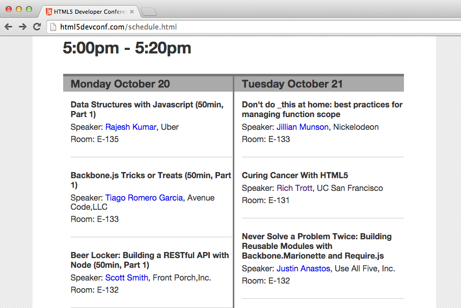

class: center, middle # Curing Cancer with HTML5 Rich Trott HTML5DevConf October 2014 San Francisco ??? Hi, everyone! Thank you for coming to "Curing Cancer with HTML5"! --- class: center, middle # Spoiler alert! *We're not actually going to cure cancer with HTML5...* ??? Hopefully this is already clear, but HTML5 will not _actually_ cure cancer. Neither will I. And this talk isn't _actually_ about oncology. It _is_ about search. So why does it have the title "Curing Cancer with HTML5"? Because when I wrote up the talk proposal, I was in a rush. Where I work, some of our researchers are in fact trying to cure cancer, boom, there's my title. Sorry, everyone. I'll try to do better with the title next time. --- class: center, middle # We have lots of search interfaces… ??? I work for the University of California, San Francisco, a health sciences institution. That means we have a hospital and lots of researchers, but we have no undergraduate students, no sports teams, no liberal arts programs, no computer science programs. We also have dozens of online resources for researchers, clinicians, and educators. Each of these online resources has its own search tool. But users shouldn't be asked to search in dozens of different interfaces to find what they're looking for. A typical solution for this issue is what's called federated search. --- class: center, middle # …and our federated search kinda sucks… ??? One of the resources, one that we actually curate and publish ourselves, is called the Legacy Tobacco Documents Library. It's an awesome collection of, literally, millions of internal tobacco industry documents. In fact, this talk was originally going to be about that site, because last year, we started a user-centered redesign for the site. We did tons of user research and found out what was working and wasn't working. But as it turns out, our federated search suffers from many of the same problems identified for the tobacco industry documents site. --- class: center, middle # …so we made it suck less. ??? So it was time to do something about it. Again, this talk was originally going to be about the tobacco industry documents site, not our federated search. I had included an amazing old Camel cigarettes commercial called "What Cigarette Do You Smoke Doctor?" I had included Sylvester Stallone's letter agreeing to be paid a half a million dollars to smoke Brown & Williamson tobacco products in feature films. I was going to talk about the overwhelming amount of metadata we showed users by default including something called—and I swear I'm not just making this up—a Bates Number and a Master Bates Number. But sometime in the last 48 hours, I realized I ought to talk about the basic building blocks, especially if I only have 20 minutes to talk. So I junked my hilarious awesome entertaining talk, and now you get this more pragmatic, narrowly-focused talk. But if you want to see that Camel ad and talk about poor choices made in naming metadata, come talk to me. --- class: center, middle # So, about federated search... ??? So, back to federated search. There are (at least) three ways to pull data out of other resources in real time. In descending order of desirability, here they are. --- class: center, middle # Cool, they have an API for that! <span class="blink">This almost never happens.</span> ??? Number 1: The content provider might publish an API. API is all the hotness now, but still, *this almost never happens*. Often what you and I consider an API is not what the content providers consider an API. If you give me a script tag that injects a widget into my page, and then you call it an API, *that is not an API*. But if it turns out an API is available, accessing the content provider's API is the most desirable option. --- class: center, middle # Screen-scrape the #*%! out of it. This is by far the most common scenario. ??? Then there's straightforward grab-the-HTML and scrape the information out of it. As we all know, it's brittle because the HTML can change and break your scraper. But it has two big upsides! Number 1: It usually works well enough. And number 2: It is usually easy and fast to implement. --- class: center, middle # Web New-dot-Oh It's full of JavaScript that injects the content. ??? Lastly, there's what you have to do when confronted with a site powered by front-end technologies. None of the content shows up unless you execute a bunch of JavaScript. For this, make friends with headless browsers like PhantomJS to scrape these sites. This should be your last resort, not your first choice. Headless browsers are fast compared to Safari and Internet Explorer, but they're slow compared to curl or API calls. --- class: center, middle # Pitfalls ??? When trying to implement these solutions, a common scenario is to build your screen-scraping federated search tool with traditional server-side languages like Java or PHP. These strategies and technologies bring with them pitfalls to be avoided. --- class: center, middle # "My solution only works in Drupal!" ??? Here's one! Our group built a solution years ago that is implemented in Drupal with no external facing API. So, if I want to experiment with a different results interface without rewriting the entire scraping engine, I need to write it in Drupal. This tight coupling prevents experimentation with other technologies or things that don't fit neatly into the Drupal paradigm. And that sucks. --- class: center, middle # JavaScript FTW ??? A lot of the pitfalls can be avoided by following sound software architecture principles. But one thing should be uncontroversial: **"No programming language has a more robust and widely-understood set of conventions and tools for processing blobs of HTML than JavaScript."** It's got DOM-handling built right in! It's got a million battle-tested libraries with simple and powerful jQuery-like selectors! Its sole reason for existing is the web and HTML! --- class: center, middle # Node.js FTW ??? So we decided that it probably made sense to build our federated search server using Node.js. --- class: center, middle # Browserify FTW ??? Or maybe even take it a step further and just let your user's browser execute the federated search entirely by itself. No need to talk to your server! If it's all just JavaScript, why not? --- class: center, middle # Amalgamatic ## github.com/ucsf-ckm/amalgamatic ??? First, we wrote a pluggable, extensible federated search tool called Amalgamatic. Now, remember, this can be used on the server—a Node.js server—or in the browser. --- class: middle ```` # npm install --save amalgamatic amalgamatic-sfx amalgamatic-pubmed ```` ??? Either way, you install it with `npm`. Here, I'm installing both amalgamatic and a pair of plugins. We'll get to those in a minute. --- class: middle ````javascript // Load Amalgamatic var amalgamatic = require('amalgamatic'); // Load some plugins to search SFX and PubMed. var sfx = require('amalgamatic-sfx'); var pubmed = require('amalgamatic-pubmed'); // Add the plugins to Amalgamatic. amalgamatic.add('sfx', sfx); amalgamatic.add('pubmed', pubmed); var callback = function (err, results) { if (err) { console.dir(err); } else { results.forEach( function (result) { console.log('\nCollection name: ' + result.name); console.dir(result.data); }); } }; // Do a search! amalgamatic.search({searchTerm: 'medicine'}, callback); ```` ??? Now we use `require` to load amalgamatic and the plugins. We add the plugins to amalgamatic. We define a callback to work on the results set. And now we search! --- class: center, middle # Amalgamatic plugins #### www.npmjs.org/browse/keyword/amalgamatic-plugin ??? Now about those plugins. We wrote the ones that we needed to search the resources we were interested in. In the course of writing these plugins, we used all three of the techniques described earlier: API, scraping HTML, and using a headless browser to get JavaScript-generated content. All the plugins are published via npm and tagged `amalgamatic-plugin` so you can find them at the URL or using `npm search`. --- class: center, middle # API server Node.js, Express ## github.com/Trott/apis.ucsf.edu ??? Third, we used Amalgamatic to expose federated search on our Node.JS-powered API server. --- class: center, middle # Federated search prototype ## http://search.library.ucsf.edu/ ??? Fourth, we set up a prototype search interface to use that API. Obligatory HTML5 API shoutout to EventSource! If you don't know it, look it up, it rules. It's one of the unsung majesticly awesome APIs, powerful and simple, and it doesn't get the attention it deserves. --- class: center, middle # Browserified Demo ### http://trott.github.io/demo-amalgamatic-browserify/ ??? Lastly, because we could, we used Browserify to create a demo showing how to use Amalgamatic so that all the retrieval and processing happens in the browser</a>—no need for an intermediary API or search server! A small caveat on the Browserify-ed version: One thing the browser couldn't do was launch the headless browser for scraping sites that depend on JavaScript execution to display results. So maybe there's another reason to keep that as a last resort technique only. --- class: middle ````javascript var amalgamatic = require('amalgamatic'); var sfx = require('amalgamatic-sfx'); sfx.setOptions({ url: 'http://cors-anywhere.herokuapp.com/ucelinks.cdlib.org:8888/sfx_ucsf/az' }); amalgamatic.add('sfx', sfx); var drupal6 = require('amalgamatic-drupal6'); drupal6.setOptions({ url: 'http://cors-anywhere.herokuapp.com/www.library.ucsf.edu/search/node' }); amalgamatic.add('drupal6', drupal6); … ```` ??? Here's the start of the JavaScript code that our Browserify demo app uses. Here you can see our cheat. Instead of using the source we want to scrape directly, we're running it through a free CORS proxy. There's a few free CORS proxies out there, and I chose CORS Anywhere for my demo. You don't need this for APIs that send CORS headers. But for other APIs, and for screen scraping, you'll need some CORS headers added. --- class: middle ````javascript var options = { searchTerm: searchTerm, // We snarfed this from the form earlier pluginCallback: function (err, result) { var elem = document.getElementById(result.name); if (err) { elem.textContent = err.message; } else { if (result.data.length) { // Code that inserts results into the DOM } else { elem.innerHTML = 'No results. :-('; } } } }; amalgamatic.search(options); ```` ??? And here's the code that does the search. You'll notice here that we're not using a callback in the search call at the bottom. Instead, there's a plugin callback specified in the options object. The plugin callback is called for each plugin when it returns its results. The global callback, in contrast, runs when all the results return. Using the plugin callback allows us to show results as they arrive rather than making the user wait for the slowest plugin to return before showing anything. --- class: middle `# browserify -o bundle.js main.js` ??? Next, we take that JavaScript, which is in `main.js`, and we bundle it up with Browserify into `bundle.js`. --- class: middle ````html <script src="bundle.js"></script> ```` ??? Finally, we include the bundle in our HTML file. --- class: center, middle  ??? Now, I've been using amalgamatic for search, but I want to encourage people to think creatively about this. It can really be used to scrape anything. So you can basically take something that doesn't have an API, and create your own API. Like...maybe...this thing. The much-maligned HTML5DevConf online schedule. I don't begrudge the conference about this. This is a super-affordable conference powered by volunteers and a shoestring budget. Yesterday, I thought, "If all the people complaining about the schedule would channel that effort towards fixing it, we'd be all set." --- class: center, middle ### https://github.com/ucsf-ckm/amalgamatic-h5dcsched ??? So I wrote an Amalgamatic plugin for the HTML5DevConf calendar. And gave it a horrible name. But the code is straightforward HTML scraping. --- class: center, middle ### https://github.com/Trott/devconf-calendar ??? Then I wrote a quick browserified page to use the plugin to dump JSON calendar data onto a page. --- class: center, middle ### http://trott.github.io/devconf-calendar ??? And we can see it here, and hope it works, WiFi-willing. --- class: center, middle # Step 3: Profit! ??? Then I tweeted about it and waited for someone to use the data to make a killer calendar interface. It didn't happen. To be fair, I tweeted about it just before midnight yesterday, so not a lot of time and diminishing benefits for someone to do the work. But you know, maybe next year I'll think of doing this a day ahead of the conference rather than halfway into it. --- class: center, middle # Thanks!! ## https://trott.github.io/curing-cancer-with-html5 Rich Trott @trott UC San Francisco